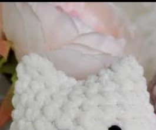

Crochet Cat
Estimated Time: 5 - 6 Hours
Materials Needed
Materials Needed
- 5mm Crochet Hook
- White Chenille Yarn
- Pink Chenille Yarn (Inner Ears & Nose)
- Black Yarn (Whiskers & Face Details)
- 10mm Safety Eyes
- Polyester Fiberfill Stuffing
- Stitch Marker
- Yarn Needle
- Scissors
Abbreviations
- MR = Magic Ring
- ch = Chain
- sc = Single Crochet
- inc = Increase
- dec = Decrease
- sl st = Slip Stitch
- FO = Fasten Off
Pattern Instructions (Cat Plush)

Step 1 (Head - R1)
Start with a magic ring (MR).
Crochet 6 single crochet (sc) into the magic ring.
Pull the yarn tail tightly to close the centre.
Step 2 (Head - R2 to R8)
R2: inc x6 (12)
R3: (sc, inc) ×6 (18)
R4: (2 sc, inc) ×6 (24)
R5–R8: sc around (24)
Use a stitch marker to keep track of each round.
Step 3 (Finish Head)
Insert the safety eyes between Rounds 6 and 7.
Stuff the head firmly with polyester fiberfill.
R9: (2 sc, dec) ×6 (18)
R10: (sc, dec) ×6 (12)
R11: dec ×6 (6)
Fasten off, leaving a long tail for sewing.

Step 4 (Ears)
Make two ears.
Start with a magic ring.
Crochet 4 sc into the ring.
Chain 1, turn, crochet 2 sc.
Fasten off, leaving a long tail for sewing.
Step 5 (Tail)
Chain 10 stitches.
Starting from the second chain from the hook, crochet 1 sc into each chain.
Fasten off, leaving a long tail.
Step 6 (Assembly)
Sew the head onto the body.
Sew both ears onto the head.
Attach the tail to the back of the body.
Embroider the nose with pink yarn and add whiskers using black yarn.
Step 7 (Finished Plush)
Weave in all loose yarn ends securely.
Your crochet cat plush is now complete!
Enjoy displaying it or giving it as a handmade gift.